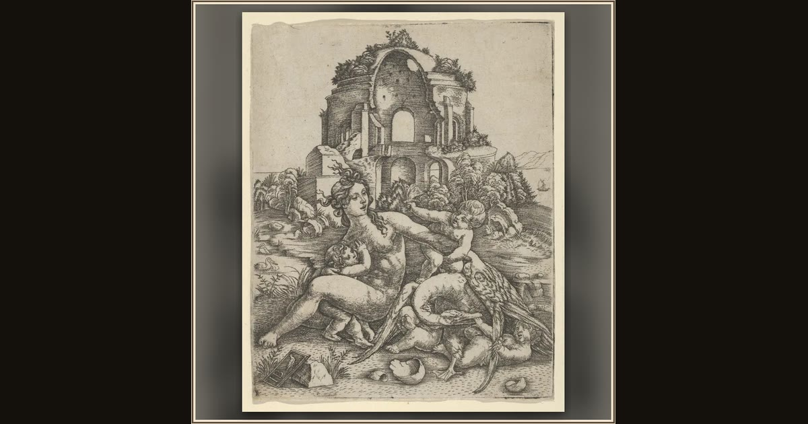

Leda and her children playing with the swan, with a Roman temple in the background
Giovanni Battista Palumba · 1500–1510 · met
Palumba's engraving shows Leda, her children, a swan and broken eggshells; Sappho's fragment recalls an egg Leda found beneath the hyacinths. (52) Explore its place in Sappho's Poems and Fragments, Fragments 20–53, section 33.